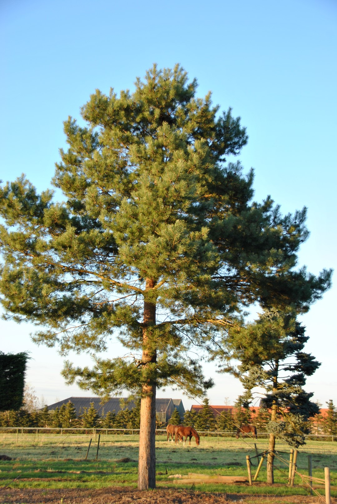
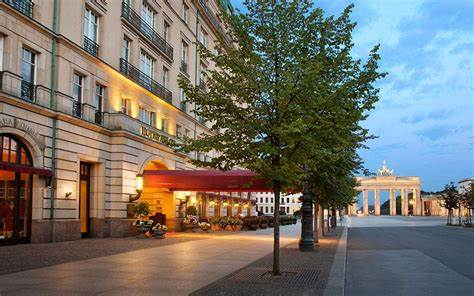

Trees that grow in Europe.
The country of Germany has 11 million hectares. Many types of tree exist: oak, european larch, beech, norway spruce, and scots pine are to name a few. These are trees that grow in the regions of Europe and Asia. The scots pine has thick and orange bark and grows only in Scotland. The ulmus laevis is a deciduous tree native to the region of Finland to Kyrgyzstan. The tree is riparian and is not tolerant to harsh condition. The trees are profound to the continent of Europe of which it symbolizes the unique rivers that are part of the land.
To read more about trees from Germany, visit the link below.
Trees in GermanyBerlin the capital of Germany.
Berlin was built beside the Spree river and incorporates lakes from the western and southern boroughs. Berlin's economy stands to rely on creative industry and high tech. Startup companies are prevalent and research facilities are productive to a means of product.
The region of Berlin is low marshy woodland. The city does extend onto low plateau, and the Arkenberge hill is the highest point in Berlin.
The table below provides the numbers on area consisted of the city of Berlin.
Area
| City | Urban | Metro |
|---|---|---|
| 891.3 km2 | 3743 km2 | 30546 km2s |
Click on the link below to read more about the city of Berlin by National Geographic.
A guide to Berlin